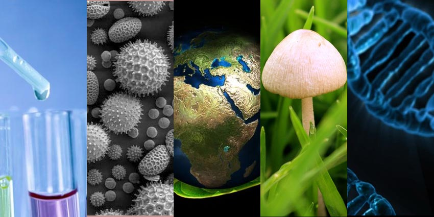

Materias
Parte de las materias que ayudan a representar situaciones en la forma de expresiones matematicas.
Ver Video.
Ciencia que estudia la estructura de los seres vivos y de sus procesos vitales. Ver Video.

Ciencia que estudia los procesos mentales, las sensaciones, las percepciones y el comportamiento del ser
humano, en relación con el medio ambiente físico y social que lo rodea.
Ver Video.
Actividad o ejercicio físico, sujeto a determinadas normas,
en que se hace prueba, con o sin competición, de habilidad, destreza o fuerza física.Ver Video

El objeto principal de esta asignatura es que los estudiantes adquieran destrezas en compresión y expresión oral y escrita desarrollen
la competencia comunicativa desde algunas de sus vertientes como pueden ser la pragmática, la lingüística o la sociolingüística entre otras.
Ver Video.